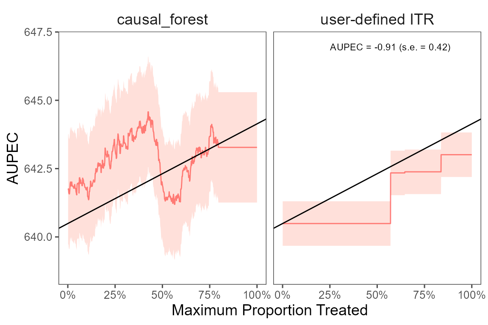
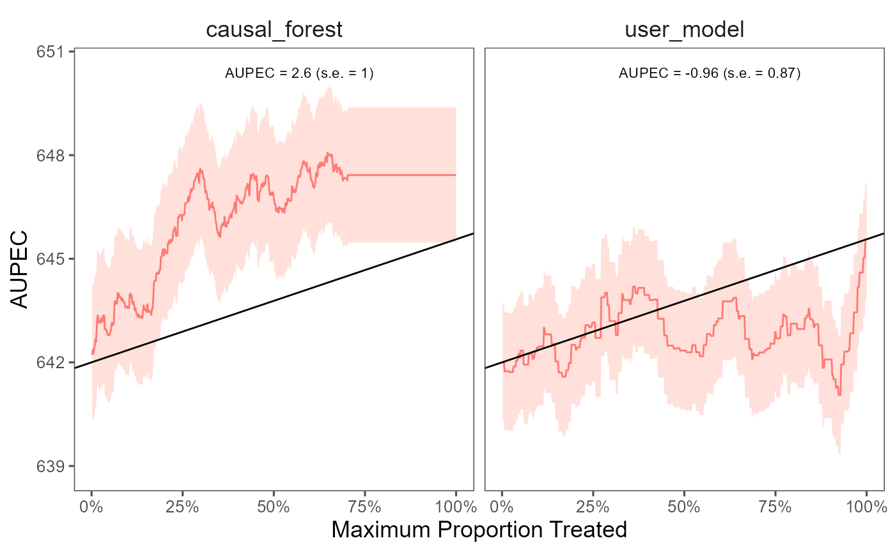

Estimated vs. User Defined ITR
The package allows to compare the performance of estimated ITRs with
user defined ITRs. The estimate_itr function takes the
following arguments:
| Argument | Description |
|---|---|
fit |
a fitted object from the estimate_itr
function |
user_itr |
a function defined by users that returns a unit-level continuous score for treatment assignment (we assume those that have score less than 0 should not have treatment) |
data |
a data frame |
treatment |
a character string specifying the treatment variable in
the data
|
outcome |
a character string specifying the outcome variable in
the data
|
budget |
a numeric value specifying the maximum percentage of population that can be treated under the budget constraint |
The function returns an object that contains the estimated GATE, ATE, and AUPEC for the user defined ITR.
# estimate ITR
fit <- estimate_itr(
treatment = "T",
form = user_formula,
data = star_data,
algorithms = c("causal_forest"),
budget = 0.2,
split_ratio = 0.7)
#> Evaluate ITR under sample splitting ...
# user's own ITR
score_function <- function(data){
data %>%
mutate(score = case_when(
school_urban == 1 ~ 0.1, # inner-city
school_urban == 2 ~ 0.2, # suburban
school_urban == 3 ~ 0.4, # rural
school_urban == 4 ~ 0.3, # urban
)) %>%
pull(score) -> score
return(score)
}
# evalutate ITR
compare_itr <- evaluate_itr(
fit = fit,
user_itr = score_function,
data = star_data,
treatment = "T",
outcome = outcomes,
budget = 0.2)
#> Cannot compute PAPDp
# summarize estimates
summary(compare_itr)
#> -- PAPE ------------------------------------------------------------------------
#> estimate std.deviation algorithm statistic p.value
#> 1 1.5 0.99 causal_forest 1.5 0.13
#> 2 0.0 0.00 user_itr NaN NaN
#>
#> -- PAPEp -----------------------------------------------------------------------
#> estimate std.deviation algorithm statistic p.value
#> 1 0.83 1.20 causal_forest 0.69 0.49
#> 2 1.06 0.67 user_itr 1.58 0.11
#>
#> -- PAPDp -----------------------------------------------------------------------
#> Cannot compute PAPDp
#>
#> -- AUPEC -----------------------------------------------------------------------
#> estimate std.deviation algorithm statistic p.value
#> 1 2.13 0.89 causal_forest 2.4 0.017
#> 2 -0.91 0.42 <NA> -2.2 0.028
#>
#> -- GATE ------------------------------------------------------------------------
#> estimate std.deviation algorithm group statistic p.value upper lower
#> 1 -47 108 causal_forest 1 -0.43 0.665 -224.8 131
#> 2 -216 107 causal_forest 2 -2.02 0.044 -392.1 -40
#> 3 -32 108 causal_forest 3 -0.30 0.765 -210.5 146
#> 4 74 108 causal_forest 4 0.68 0.494 -104.0 252
#> 5 228 108 causal_forest 5 2.12 0.034 51.4 405
#> 6 126 58 user_itr 1 2.16 0.031 30.2 222
#> 7 96 59 user_itr 2 1.62 0.105 -1.4 194
#> 8 -33 59 user_itr 3 -0.56 0.579 -129.7 64
#> 9 -139 59 user_itr 4 -2.36 0.018 -236.5 -42
#> 10 -32 59 user_itr 5 -0.54 0.589 -129.4 65We plot the estimated Area Under the Prescriptive Effect Curve (AUPEC) for the writing score across a range of budget constraints for user defined ITR and estimated ITRs. The plot shows that the estimated ITRs have better performance than the user defined ITR.
# plot the AUPEC
plot(compare_itr)
Existing Model vs. User-Defined Model
The package also allows to compare the performance of estimated ITRs
of existing ML packages with user defined models. The following code
shows an example using causal forest from the grf package
with sample splitting. The estimate_itr function takes the
following arguments:
| Argument | Description |
|---|---|
treatment |
a character string specifying the treatment variable in
the data
|
form |
a formula specifying the outcome and covariates |
data |
a data frame |
algorithms |
a character vector specifying the ML algorithms to be used |
budget |
a numeric value specifying the maximum percentage of population that can be treated under the budget constraint |
split_ratio |
a character string specifying the outcome variable in
the data
|
user_model |
a character string specifying the user defined model |
The user_model input should be a function that takes two
arguments: training_data and test_data. The
function will make use of the training_data to fit a model
and then use the test_data to estimate CATE or other
metrics of interest. It should also specify the way to get the ITR,
based on the estimated effects.
In the following example, we fit a linear model with sample splitting
and use the estimated CATE. We compute the ITR by assigning treatment to
those with positive CATE and no treatment to those with negative CATE.
The function user_model takes in the training data and test
data and return a list that contains (1) an ITR; (2) a fitted model; and
(3) a continuous score with the same length as the input data.
# user-defined model
user_model <- function(training_data, test_data){
# model fit on training data
fit <- train_model(training_data)
# estimate CATE on test data
compute_hatf <- function(fit, test_data){
score <- fit_predict(fit, test_data)
itr <- score_function(score)
return(list(itr = itr, score = score))
}
hatf <- compute_hatf(fit, test_data)
return(list(
itr = hatf$itr,
fit = fit,
score = hatf$score))
}Note that the user defined model can be any model that returns a
unit-level continuous score for treatment assignment. It does not have
to be a linear model or model that estimate CATE. We can specify custom
functions in the train_model function and the
fit_predict function to compute the score. If the model
does not have a default predict function, we need to write
up a custom function with fit_predict.
# train model
train_model <- function(data){
fit <- lm(
Y ~ T*(cov1 + cov1 + cov3),
data = data)
return(fit)
}
# predict function
fit_predict <- function(fit, data){
# need to change this function if
# the model does not have a default predict function
score <- predict(fit, data)
return(score)
}In addition, we can also choose any scoring rule that maps the score to a binary indicator of treatment assignment.
# score function
score_function <- function(score){
itr <- (score >= 0) * 1
return(itr)
}If split_ratio is specified, the function will split the
data into training and test data. The split_ratio should be
a numeric value between 0 and 1. Alternatively, if n_folds
is specified, the function will use the entire data to fit the user
defined model via cross-validation.
# estimate ITR
compare_fit <- estimate_itr(
treatment = "T",
form = user_formula,
data = star_data,
algorithms = c("causal_forest"),
budget = 0.2,
split_ratio = 0.7,
user_model = "user_model")
#> Evaluate ITR under sample splitting ...
# evaluate ITR
compare_est <- evaluate_itr(compare_fit)
# summarize estimates
summary(compare_est)
#> -- PAPE ------------------------------------------------------------------------
#> estimate std.deviation algorithm statistic p.value
#> 1 1.6 1.2 causal_forest 1.3 0.2
#> 2 0.0 0.0 user_model NaN NaN
#>
#> -- PAPEp -----------------------------------------------------------------------
#> estimate std.deviation algorithm statistic p.value
#> 1 2.60 1.2 causal_forest 2.14 0.032
#> 2 0.97 1.2 user_model 0.79 0.427
#>
#> -- PAPDp -----------------------------------------------------------------------
#> estimate std.deviation algorithm statistic p.value
#> 1 1.6 1.7 causal_forest x user_model 0.95 0.34
#>
#> -- AUPEC -----------------------------------------------------------------------
#> estimate std.deviation algorithm statistic p.value
#> 1 2.35 0.98 causal_forest 2.40 0.016
#> 2 -0.57 0.88 user_model -0.65 0.515
#>
#> -- GATE ------------------------------------------------------------------------
#> estimate std.deviation algorithm group statistic p.value upper lower
#> 1 35 109 causal_forest 1 0.33 7.5e-01 -143 214
#> 2 145 109 causal_forest 2 1.34 1.8e-01 -34 324
#> 3 56 109 causal_forest 3 0.52 6.1e-01 -123 235
#> 4 -146 108 causal_forest 4 -1.35 1.8e-01 -322 31
#> 5 -72 107 causal_forest 5 -0.67 5.0e-01 -247 104
#> 6 -249 104 user_model 1 -2.39 1.7e-02 -421 -77
#> 7 -455 104 user_model 2 -4.39 1.1e-05 -625 -284
#> 8 -303 105 user_model 3 -2.88 4.0e-03 -477 -130
#> 9 316 110 user_model 4 2.88 4.0e-03 135 496
#> 10 711 109 user_model 5 6.51 7.4e-11 531 890
plot(compare_est)